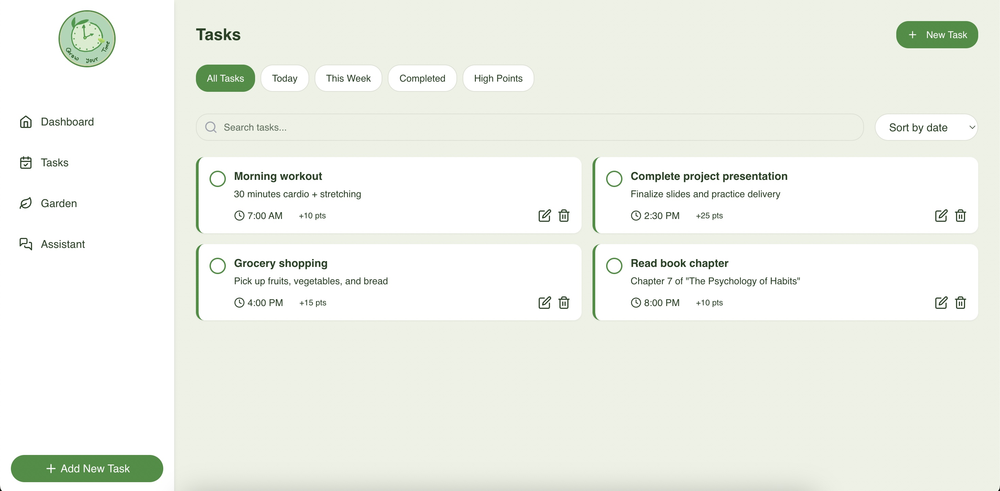
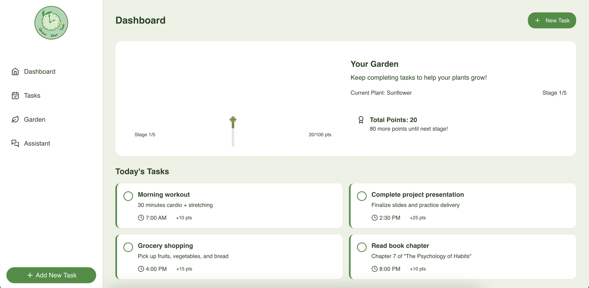
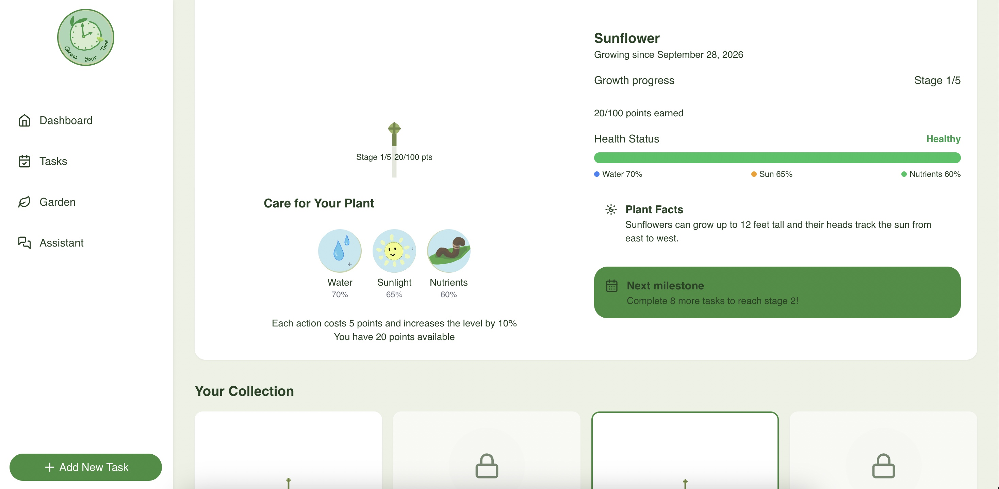
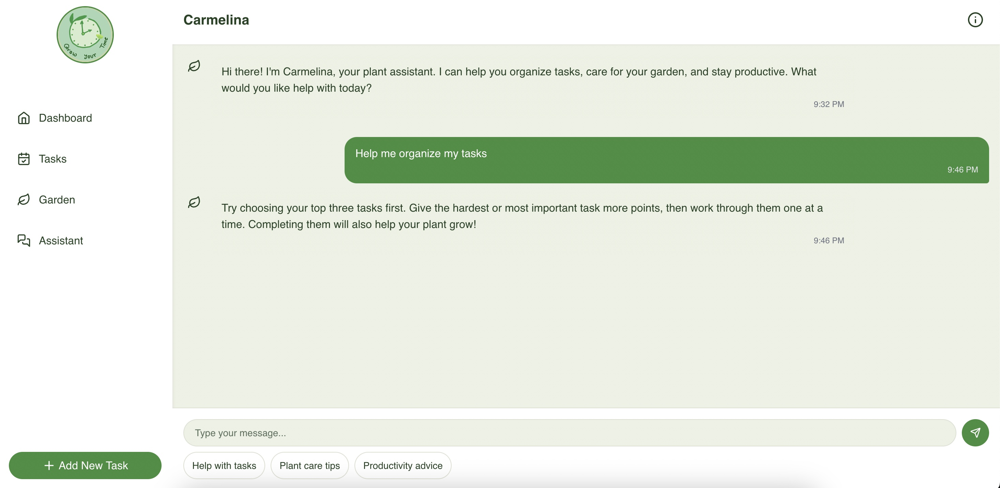

Plan
Create and organize tasks with point values and deadlines.
✦ WEHACK PROJECT
A gamified productivity web application that turns everyday task completion into progress for a virtual plant.

Dashboard connecting daily tasks, earned points, and virtual plant growth.
01
Making everyday productivity more engaging by connecting completed tasks to visible progress.
PRODUCTIVITY + GAMIFICATION
GrowYourTime combines a traditional task manager with a virtual plant growth system.
Instead of simply checking an item off a list, completing a task earns points that contribute toward the user's virtual garden.
This creates a simple feedback loop: organize work, complete tasks, earn points, and use that progress to grow and care for a plant.
Create and organize tasks
Complete tasks to earn points
Progress through plant stages
Use points to care for the plant
02
Four connected parts create the application's main productivity loop.
Create and organize tasks with point values and deadlines.
Finish tasks and collect the points assigned to them.
Earn enough points to move the plant through growth stages.
Spend points on water, sunlight, and nutrients.
03
The productivity side of GrowYourTime handles everyday planning and progress tracking.

Every task contributes to progress.
Users can create, edit, complete, delete, search, sort, and filter their tasks from one interface.
Each task has its own point reward, connecting normal productivity actions directly to the plant system.
Task Creation
Point Rewards
Search & Filtering
Completion Tracking
04
Productivity becomes a visual reward through an interactive virtual plant.

Complete work. Grow something.
The garden tracks the current plant, its growth stage, total points, and overall health.
Earned points can be used for water, sunlight, and nutrients, tying plant care directly to completed work.
Growth Stages
Plant Health
Care Controls
Point System
05
A conversational assistant adds another layer to the productivity experience.

Guidance inside the application.
Carmelina gives users another way to interact with GrowYourTime.
The assistant provides productivity suggestions, task help, and virtual plant care guidance.
Task Help
Productivity Tips
Plant Care
Quick Prompts
06
The main features share one consistent visual system across the application.
07
A walkthrough of the working application and its main interactive features.
08
The portfolio version keeps the original concept interactive while remaining lightweight enough for GitHub Pages.
Reusable components power the dashboard, tasks, garden, and assistant.
Typed application logic keeps frontend data and behavior organized.
Tasks, points, and plant progress persist directly in the user's browser.
Client-side navigation connects the application's main views.
PROJECT TAKEAWAYS
GrowYourTime gave me experience connecting several parts of a web application instead of treating each feature independently. The project combines task management, persistent user progress, gamification, virtual plant care, responsive interface design, and client-side routing into one cohesive application.